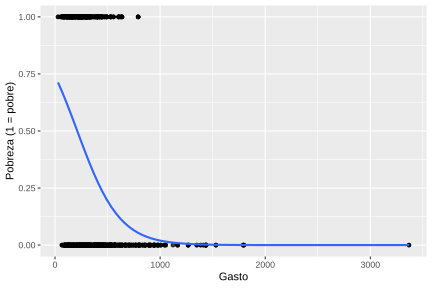
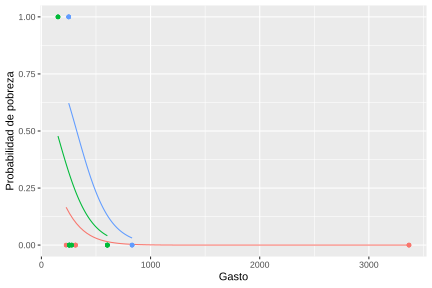
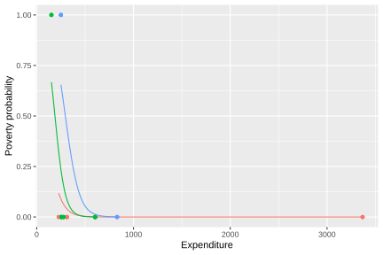

7.4 Multilevel Logistic Model
Multilevel logistic models extend multilevel models for continuous variables to the case in which the response variable is dichotomous. Instead of directly modeling the expected value of a continuous variable, these models estimate the probability of occurrence of an event, simultaneously incorporating individual covariates and random effects associated with the groups to which units belong. In the context of household surveys, this formulation is especially useful when analyzing binary outcomes, such as being in poverty or not, accessing a service or not, participating or not in the labor market, or presenting a certain sociodemographic characteristic.
As in multilevel models for continuous variables, the starting point is to recognize that the observation units are not independent when they belong to the same stratum, cluster, or domain. However, in the logistic case the response is not represented by a normal distribution with an additive residual error, but by a Bernoulli distribution conditional on the probability of occurrence of the event. This probability is linked to the predictors through the logit function, which makes it possible to express the model on a linear scale.
\[ y_{kj} \mid \pi_{kj} \sim \text{Bernoulli}(\pi_{kj}) \]
where \(y_{kj}\) takes the value one if unit \(k\) of stratum \(j\) presents the event of interest and zero otherwise. The conditional probability of the event is denoted by \(\pi_{kj}=Pr(y_{kj}=1)\) and is related to the linear predictor through
\[ \text{logit}(\pi_{kj}) = \log\left(\frac{\pi_{kj}}{1-\pi_{kj}}\right) = \eta_{kj} \]
In this formulation, \(\eta_{kj}\) plays a role analogous to the linear expected value of models for continuous variables. The central difference is that the fixed and random effects act on the logit scale and not directly on the probability. Therefore, the differences between strata are interpreted as shifts in the log-odds of the event, which are then transformed into probabilities through the logistic function. Figure 7.7 presents the relationship between expenditure and the probability of poverty, with a fitted logistic curve.
ggplot(data = survey_data,
aes(y = poverty, x = Expenditure)) +
geom_point(alpha = 0.5) +
geom_smooth(
formula = y ~ x,
method = "glm",
se = FALSE,
method.args = list(family = binomial(link = "logit"))
) +
labs(y = "Poverty (1 = poor)", x = "Expenditure")
Figure 7.7: Relationship between expenditure and poverty status with fitted logistic curve
The fitted curve summarizes the marginal association between expenditure and poverty status, without yet incorporating the hierarchical structure of the strata. In general terms, the descending shape of the curve indicates that, as household expenditure increases, the estimated probability of being in poverty decreases. However, this average relationship can hide relevant differences between strata, especially when households belong to different socioeconomic contexts.
7.4.1 Logistic Null Model
As in the case of continuous variables, the logistic null model constitutes the starting point to study the hierarchical structure of the response variable. This model does not incorporate covariates and allows us to evaluate whether the average probability of the event varies between strata. In the example considered, the event of interest corresponds to the poverty status, so that the model allows us to separate the heterogeneity attributable to differences between strata from the individual variation inherent to a binary response.
In the null model, the variable of interest follows the following Bernoulli distribution:
\[ y_{kj} \mid \pi_{kj} \sim \text{Bernoulli}(\pi_{kj}) \]
where the probability of success for unit \(k\) belonging to group \(j\) is modeled through
\[ \text{logit}(\pi_{kj}) = \beta_{0j}, \]
where \(\beta_{0j}\) represents the specific intercept of stratum \(j\) on a logit scale. In turn, this intercept is decomposed as
\[ \beta_{0j} = \gamma_{00} + \tau_{0j} \]
where \(\gamma_{00}\) is the global average intercept of the population and \(\tau_{0j}\) the random effect associated with stratum \(j\), which captures the deviations of each group from the overall average. As in the null model for continuous variables, this random effect allows heterogeneity between groups to be explicitly modeled:
\[ \tau_{0j} \sim N(0,\sigma_{\tau}^{2}) \]
Unlike the multilevel linear model, here an additive residual term \(\epsilon_{kj}\) is not incorporated into the individual-level equation. Within-group variability is determined by the Bernoulli distribution of the response. To quantify the dependence between units belonging to the same stratum, the latent variable approach is often used, under which this residual variance is approximated by the variance of the standard logistic distribution, that is, \(\pi^2/3\) (Snijders & Bosker, 2011). Thus, the intraclass correlation of the logistic model is expressed as
\[ \rho = \frac{\sigma_\tau^2} {\sigma_\tau^2 + \frac{\pi^2}{3}} \]
A high value of \(\rho\) indicates that the probability of the event has an important clustering structure, that is, that two units belonging to the same stratum tend to be more similar to each other than two units taken from different strata. In contrast, a low value suggests that most of the variation is concentrated at the individual level. The fit in R is carried out as follows:
logistic_null_model <- glmer(
poverty ~ (1 | Stratum),
data = survey_data,
weights = qk,
family = binomial(link = "logit")
)The coefficients of the logistic null model by stratum are presented in Table 7.5. The intercepts estimated in the null model show considerable heterogeneity between strata. In the first reported strata, some intercepts are strongly negative, such as idStrt004 and idStrt003, which corresponds to very low baseline probabilities of poverty. In contrast, strata such as idStrt009 and idStrt006 present positive and high intercepts, associated with much higher baseline probabilities.
| (Intercept) | |
|---|---|
| idStrt001 | -0.852 |
| idStrt002 | -0.038 |
| idStrt003 | -2.378 |
| idStrt004 | -2.618 |
| idStrt005 | -1.037 |
| idStrt006 | 0.902 |
| idStrt007 | -1.018 |
| idStrt008 | 0.156 |
| idStrt009 | 1.913 |
| idStrt010 | -0.609 |
| idStrt011 | -1.275 |
| idStrt012 | 0.203 |
The intraclass correlation amounts to 0.315. Since the model does not include covariates, these differences exclusively reflect between-strata variation in the prevalence of the event.
## # Intraclass Correlation Coefficient
##
## Adjusted ICC: 0.315
## Unadjusted ICC: 0.3157.4.2 Logistic Model with Random Intercept
The logistic model with a random intercept incorporates individual or household covariates, allowing the baseline level of the event to vary between strata. Its logic is parallel to that of the model with a random intercept for continuous variables: the effects of the covariates are considered common to all groups, while each stratum can have its own intercept. In this case, the differences between intercepts are interpreted as differences in the baseline log-odds of the event.
The model is expressed as \(y_{kj} \mid \pi_{kj} \sim \text{Bernoulli}(\pi_{kj})\), where \(\text{logit}(\pi_{kj}) = \beta_{0j} + \mathbf{x}_{kj}\boldsymbol{\beta}\) and \(\beta_{0j} = \gamma_{00} + \tau_{0j}\). In this case, \(\mathbf{x}_{kj}\) represents the covariate vector of unit \(k\) in stratum \(j\), \(\boldsymbol{\beta}\) is the vector of fixed effects common to all strata, and \(\tau_{0j}\) captures the stratum-specific deviation from the global average intercept. As before, it is assumed that \(\tau_{0j} \sim N(0,\sigma_{\tau}^{2})\).
Under this specification, two strata with the same values of the covariates can present different baseline probabilities of the event due to their random intercepts. However, the effect of each covariate on the logit scale remains constant between strata. In the example, this is equivalent to allowing the baseline probability of poverty to change across strata, while the association between expenditure and poverty is summarized by a common slope.
random_intercept_logit_model <- glmer(
poverty ~ Expenditure + (1 | Stratum),
data = survey_data,
family = binomial(link = "logit"),
weights = qk
)
performance::icc(random_intercept_logit_model)## # Intraclass Correlation Coefficient
##
## Adjusted ICC: 0.298
## Unadjusted ICC: 0.171The estimated coefficients by stratum are shown in Table 7.6. When incorporating household expenditure as a covariate, the fixed coefficient associated with Expenditure is negative, indicating that higher levels of expenditure are associated with lower log-odds of poverty. This implies a progressive reduction in the estimated probability of poverty as expenditure increases, holding the stratum effect constant. In this model, the effect of expenditure is common, but each stratum has its own baseline level of poverty. Thus, strata with high positive intercepts have a higher baseline probability of poverty for the same level of expenditure, while strata with negative intercepts show a lower baseline probability.
Even after controlling for expenditure, the adjusted intraclass correlation remains high, around 0.298, showing that differences between strata remain relevant.
| (Intercept) | Expenditure | |
|---|---|---|
| idStrt001 | 1.044 | -0.007 |
| idStrt002 | 1.918 | -0.007 |
| idStrt003 | -0.454 | -0.007 |
| idStrt004 | 0.062 | -0.007 |
| idStrt005 | 1.760 | -0.007 |
| idStrt006 | 3.194 | -0.007 |
| idStrt007 | 0.658 | -0.007 |
| idStrt008 | 1.711 | -0.007 |
| idStrt009 | 3.721 | -0.007 |
| idStrt010 | 1.175 | -0.007 |
Figure 7.8 presents the probability curves predicted by a logistic model with a random intercept by stratum. An inverse relationship is observed between expenditure and the probability of poverty, such that households with higher expenditure levels have a lower probability of being classified as poor. Likewise, the differences between the curves reflect the existing heterogeneity between strata, captured by the random intercepts of the model.
prediction_data <- plot_data %>%
group_by(Stratum) %>%
summarise(
Expenditure = list(seq(min(Expenditure), max(Expenditure), len = 100))
) %>%
tidyr::unnest_legacy()
prediction_data <- prediction_data %>%
mutate(
probability = predict(
random_intercept_logit_model,
newdata = prediction_data,
type = "response"
)
)ggplot(data = prediction_data,
aes(y = probability, x = Expenditure, colour = Stratum)) +
geom_line() +
geom_point(data = plot_data,
aes(y = poverty, x = Expenditure)) +
labs(y = "Poverty probability", x = "Expenditure") +
theme(legend.position = "none")
Figure 7.8: Predicted probability curves by stratum: logistic model with random intercept
7.4.3 Logistic Model with Random Intercept and Slope
The logistic model with random intercept and slope extends the previous specification by allowing not only the baseline level of the event to vary between strata, but also the effect of a specific covariate. This formulation is analogous to the random intercept and slope model for continuous variables, with the exception that the differences between strata are expressed on the logit scale and are translated into nonlinear probability curves.
Let \(x_{kj}\) be the covariate whose effect is allowed to vary between strata, and let \(\mathbf{z}_{kj}\) be the set of covariates with common fixed effects. In this model, the probability of success is assumed such that \(\text{logit}(\pi_{kj}) = \beta_{0j} + x_{kj}\beta_{1j} + \mathbf{z}_{kj}\boldsymbol{\beta}\). Here, \(\beta_{0j}\) is the stratum-specific intercept for stratum \(j\) and \(\beta_{1j}\) is the specific slope associated with the covariate \(x_{kj}\).
Both parameters are decomposed into a population-average part and a stratum-specific deviation, such that \(\beta_{0j} = \gamma_{00} + \tau_{0j}\) and \(\beta_{1j} = \gamma_{10} + \tau_{1j}\). The terms \(\gamma_{00}\) and \(\gamma_{10}\) represent, respectively, the global average intercept and the global average slope on a logit scale. For their part, \(\tau_{0j}\) and \(\tau_{1j}\) capture how much stratum \(j\) deviates from these averages. The implementation in R is as follows:
random_slope_logit_model <- glmer(
poverty ~ 1 + Expenditure + (1 + Expenditure | Stratum),
data = survey_data,
weights = qk,
family = binomial(link = "logit")
)
performance::icc(random_slope_logit_model)## # Intraclass Correlation Coefficient
##
## Adjusted ICC: 0.875
## Unadjusted ICC: 0.631The estimation of the model with random intercept and slope indicates much more pronounced heterogeneity between strata. In this case, both the intercepts and slopes associated with expenditure can change between groups. The adjusted intraclass correlation is very high, suggesting that the between-strata component dominates the latent variation in the model. The model coefficients by stratum are shown in Table 7.7.
| (Intercept) | Expenditure | |
|---|---|---|
| idStrt001 | 4.865 | -0.025 |
| idStrt002 | 9.862 | -0.035 |
| idStrt003 | -1.133 | -0.007 |
| idStrt004 | 1.899 | -0.015 |
| idStrt005 | 8.030 | -0.026 |
| idStrt006 | -1.153 | 0.009 |
| idStrt007 | 0.974 | -0.012 |
| idStrt008 | 1.488 | -0.006 |
| idStrt009 | 3.660 | -0.005 |
| idStrt010 | 4.133 | -0.020 |
The coefficients by stratum show that the relationship between expenditure and poverty changes not only in its baseline level, but also in the strength and direction of the slope. In several strata the slope of expenditure is negative, which maintains the expected interpretation that higher levels of expenditure reduce the probability of poverty. However, slopes close to zero and even positive slopes also appear in some strata, suggesting distinct local patterns. This variability is precisely what the model seeks to capture through the random effect of the slope. Figure 7.9 shows that the predicted curves are more heterogeneous between strata than in the previous model:
prediction_data <- plot_data %>%
group_by(Stratum) %>%
summarise(
Expenditure = list(seq(min(Expenditure), max(Expenditure), len = 100))
) %>%
tidyr::unnest_legacy()
prediction_data <- prediction_data %>%
mutate(
probability = predict(
random_slope_logit_model,
newdata = prediction_data,
type = "response"
)
)ggplot(data = prediction_data,
aes(y = probability, x = Expenditure, colour = Stratum)) +
geom_line() +
geom_point(data = plot_data,
aes(y = poverty, x = Expenditure)) +
labs(y = "Poverty probability", x = "Expenditure") +
theme(legend.position = "none")
Figure 7.9: Predicted probability curves by stratum: logistic model with random intercept and slope